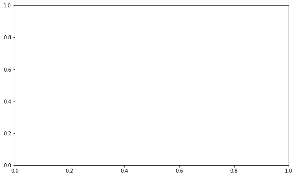

Correlation
Contents
Correlation¶
import matplotlib.pyplot as plt
import pandas as pd
import seaborn as sns
---------------------------------------------------------------------------
ModuleNotFoundError Traceback (most recent call last)
Input In [1], in <cell line: 3>()
1 import matplotlib.pyplot as plt
2 import pandas as pd
----> 3 import seaborn as sns
ModuleNotFoundError: No module named 'seaborn'
Regression Plot¶
mpg = pd.read_csv('../../datasets/stats/mpg.csv')
mpg.head()
| manufacturer | model | displ | year | cyl | trans | drv | cty | hwy | fl | class | |
|---|---|---|---|---|---|---|---|---|---|---|---|
| 0 | audi | a4 | 1.8 | 1999 | 4 | auto(l5) | f | 18 | 29 | p | compact |
| 1 | audi | a4 | 1.8 | 1999 | 4 | manual(m5) | f | 21 | 29 | p | compact |
| 2 | audi | a4 | 2.0 | 2008 | 4 | manual(m6) | f | 20 | 31 | p | compact |
| 3 | audi | a4 | 2.0 | 2008 | 4 | auto(av) | f | 21 | 30 | p | compact |
| 4 | audi | a4 | 2.8 | 1999 | 6 | auto(l5) | f | 16 | 26 | p | compact |
mpg_select = mpg.query('cyl in [4, 8]')
ax = sns.lmplot(x='displ',
y='hwy',
data=mpg_select,
height=7,
robust=True,
hue="cyl",
col='cyl',
scatter_kws=dict(s=60, lw=.7, edgecolors='black'))
ax.set(xlim=(0.5, 7.5), ylim=(0, 50))
plt.suptitle(
t='Scatterplot with line of best fit grouped by number of cylinders',
y=1.05)
plt.show()
---------------------------------------------------------------------------
NameError Traceback (most recent call last)
Input In [3], in <cell line: 3>()
1 mpg_select = mpg.query('cyl in [4, 8]')
----> 3 ax = sns.lmplot(x='displ',
4 y='hwy',
5 data=mpg_select,
6 height=7,
7 robust=True,
8 hue="cyl",
9 col='cyl',
10 scatter_kws=dict(s=60, lw=.7, edgecolors='black'))
12 ax.set(xlim=(0.5, 7.5), ylim=(0, 50))
13 plt.suptitle(
14 t='Scatterplot with line of best fit grouped by number of cylinders',
15 y=1.05)
NameError: name 'sns' is not defined
Jittering¶
_, ax = plt.subplots(figsize=(10, 6))
sns.stripplot(x='cty', y='hwy', data=mpg, jitter=0.5, size=10, ax=ax)
ax.set(title='Use jittered plots to avoid overlapping of points')
plt.show()
---------------------------------------------------------------------------
NameError Traceback (most recent call last)
Input In [4], in <cell line: 3>()
1 _, ax = plt.subplots(figsize=(10, 6))
----> 3 sns.stripplot(x='cty', y='hwy', data=mpg, jitter=0.5, size=10, ax=ax)
5 ax.set(title='Use jittered plots to avoid overlapping of points')
6 plt.show()
NameError: name 'sns' is not defined

Marginal Plot¶
g = sns.JointGrid(height=9)
sns.scatterplot(data=mpg,
x="displ",
y="hwy",
hue="manufacturer",
ax=g.ax_joint)
h, l = g.ax_joint.get_legend_handles_labels()
g.ax_joint.legend_.remove()
g.ax_joint.legend(h,
l,
title="manufacturer",
loc="upper center",
bbox_to_anchor=(0.5, -0.1),
ncol=5)
sns.boxplot(data=mpg, x="displ", ax=g.ax_marg_x)
sns.boxplot(data=mpg, y="hwy", ax=g.ax_marg_y)
plt.show()
---------------------------------------------------------------------------
NameError Traceback (most recent call last)
Input In [5], in <cell line: 1>()
----> 1 g = sns.JointGrid(height=9)
2 sns.scatterplot(data=mpg,
3 x="displ",
4 y="hwy",
5 hue="manufacturer",
6 ax=g.ax_joint)
7 h, l = g.ax_joint.get_legend_handles_labels()
NameError: name 'sns' is not defined
FacetGrid¶
mtcars = pd.read_csv("../../datasets/stats/mtcars.csv")
mtcars.head()
| mpg | cyl | disp | hp | drat | wt | qsec | vs | am | gear | carb | fast | cars | |
|---|---|---|---|---|---|---|---|---|---|---|---|---|---|
| 0 | 4.582576 | 6 | 160.0 | 110 | 3.90 | 2.620 | 16.46 | 0 | 1 | 4 | 4 | 1 | Mazda RX4 |
| 1 | 4.582576 | 6 | 160.0 | 110 | 3.90 | 2.875 | 17.02 | 0 | 1 | 4 | 4 | 1 | Mazda RX4 Wag |
| 2 | 4.774935 | 4 | 108.0 | 93 | 3.85 | 2.320 | 18.61 | 1 | 1 | 4 | 1 | 1 | Datsun 710 |
| 3 | 4.626013 | 6 | 258.0 | 110 | 3.08 | 3.215 | 19.44 | 1 | 0 | 3 | 1 | 1 | Hornet 4 Drive |
| 4 | 4.324350 | 8 | 360.0 | 175 | 3.15 | 3.440 | 17.02 | 0 | 0 | 3 | 2 | 1 | Hornet Sportabout |
g = sns.FacetGrid(mtcars, col="vs", row="am", height=5)
g.map(sns.scatterplot, "mpg", "wt")
plt.show()
---------------------------------------------------------------------------
NameError Traceback (most recent call last)
Input In [7], in <cell line: 1>()
----> 1 g = sns.FacetGrid(mtcars, col="vs", row="am", height=5)
2 g.map(sns.scatterplot, "mpg", "wt")
3 plt.show()
NameError: name 'sns' is not defined
Heatmap¶
_, axes = plt.subplots(figsize=(10, 6))
sns.heatmap(mtcars.corr(),
xticklabels=mtcars.corr().columns,
yticklabels=mtcars.corr().columns,
cmap='RdYlGn',
center=0,
annot=True,
ax=axes)
ax.set(title='Correlogram of mtcars')
plt.show()
---------------------------------------------------------------------------
NameError Traceback (most recent call last)
Input In [8], in <cell line: 3>()
1 _, axes = plt.subplots(figsize=(10, 6))
----> 3 sns.heatmap(mtcars.corr(),
4 xticklabels=mtcars.corr().columns,
5 yticklabels=mtcars.corr().columns,
6 cmap='RdYlGn',
7 center=0,
8 annot=True,
9 ax=axes)
11 ax.set(title='Correlogram of mtcars')
12 plt.show()
NameError: name 'sns' is not defined